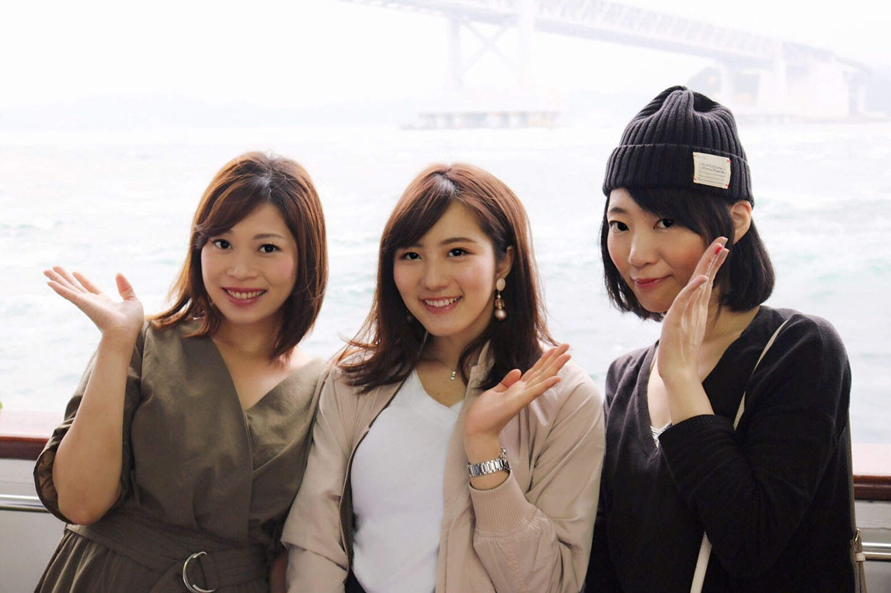
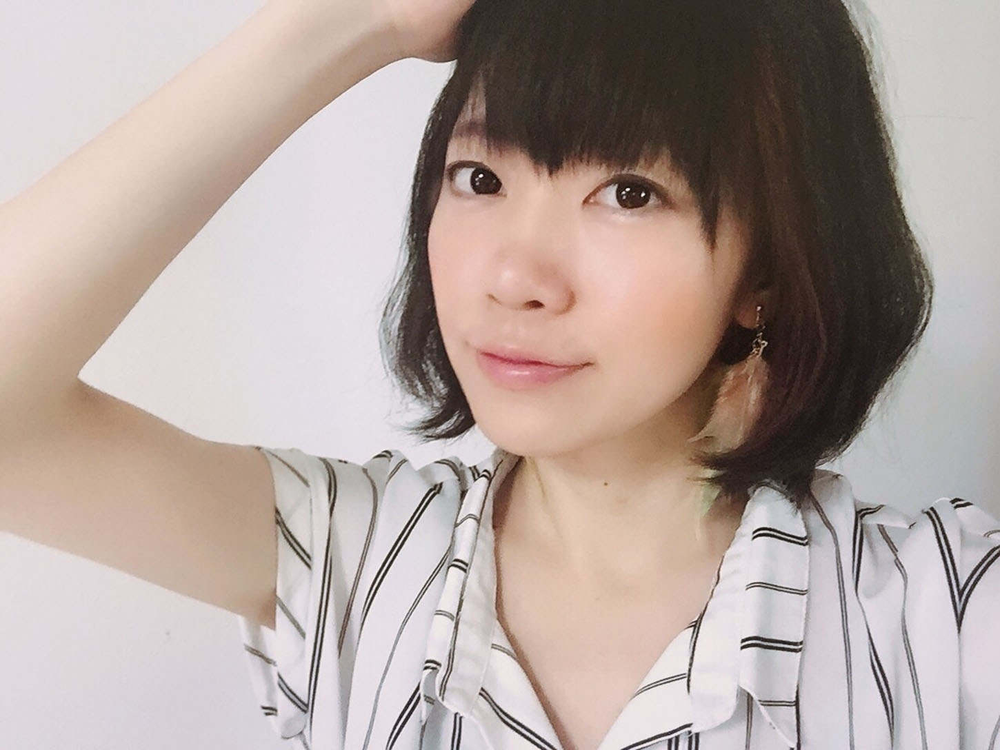
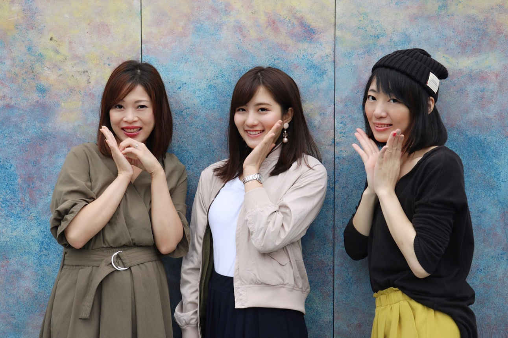
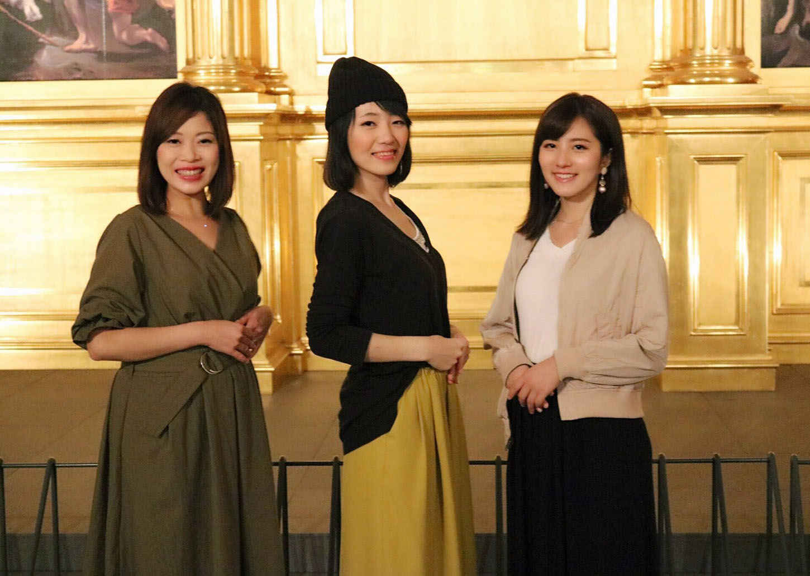

| モテ起業 〜お金もモテも幸せも手に入れる秘訣〜 | |
| よしこ・りな・わか | |
| Hitotsuku Publication (2018) | |
モテ起業 〜お金もモテも幸せも手に入れる秘訣〜
よしこ・りな・わか
はじめに － 誰もが欲しい「モテ」を手に入れるために必要な、たった１つのこと－
女性脳は、基本的に欲張りです。
ずっとキレイでいたいし、収入を上げたいし、運命の男性と出会って結婚したいし、幸せになりたいし、自由に生きたいし、満たされたいし......。
これを読んでくださっているあなたも、一度はそんな生活をイメージしたことがあるはずです。ですが、実際はどうでしょうか？
収入が低い女性って、すごく多いと思うんですね。
現実問題、漫画『花より男子』の道明寺司のような男性が現れてはくれないんです。
「そんな未来を手に入れるなんて無理」と既に諦めてしまっている女性は多いでしょう。
実際、私も無理だと思ってました。「収入上げるなんて無理。モテるなんて無理。幸せになるなんて無理」って。
でも、それってできるんです。
私を含め、人からお金からモテている女性はたくさんいます。彼女たちに共通しているのが、自立しているということ。そして、自らで稼ぐ術を持っているということです。
例えば、あなたが会社員だったとします。これからもずっと会社で働き続けることで、自らで稼ぐ術を身につけることはできますか？
もちろん、稼ぐ力だけが必要というわけではありません。外見の良さや内面の美しさ、力強さに惹かれているケースが多いです。
では、会社員を続けながら外見も、内面も磨くことは可能でしょうか？ 今、会社から貰っているお給料で、エステなどに通い、美しさに磨きをかけることはできますか？ 自身のキャリアアップを狙って、勉強する時間はありますか？
若い時は「可愛い」「守ってあげたい」だけで、人が寄ってくるかもしれません。ですが、人間は歳はとります。「20
代はモテたけど、30
代はモテない」なんて話は結構あると思うんです。外見以外の魅力を磨くことが大切なんです。
それなのに、自分にかける時間やお金がないと、常に不安や孤独と戦わなければならず、満たされない状態を続けることになります。
今は個人が自分らしい生き方で起業できる時代です。住んでる場所、経歴、能力などは関係ありません。自ら稼ぐ力を身につけることで、人や会社に依存せず、自分らしい人生を生きていく魅力的で力強い、かっこいい女性に近づいていけるのです。
本書では"起業"をキッカケに、自分自身の生きたい道を、充実感を味わいながら自立してかっこよく生きている女性２人の実例も挙げながら、人にもお金にもモテるための考え方や行動を紹介していきます。
「なんかやりたいことはあるんだけど、モヤモヤしてる」だったり、「モテたいし、満たされたいけどどうしたらいいのか分からない」だったりしている方が、自ら稼ぐ力を身につけて、人生を充実させ、人からモテるサイクルを実現するための一歩になれば幸いです。

第１章 モテない女性を参考にしたら、お金もモテも幸せも手に入った
私は以前、エステ店の店長を勤めていました。
大学を卒業してから、エステとアパレルに12
年近く勤め、年収３０００万の旦那さんとの結婚を機に仕事を辞め、彼がキッカケで起業しました。物販から始めて月収36
万を売り上げ、今は起業支援のコミュニティ講師をしています。
・一生懸命なにかに打ち込むことが、モテることへの一歩目
「どうやって年収３０００万の旦那さんを手に入れたの？」と思われている方もいると思います。
実際、私は偏差値50
もありませんでしたし、資格はエステと普通自動車運転免許しか持っていません。パソコンスキルもゼロです。特に取り柄もなく、「普通」としか言いようがありません。
そんな私が年収３０００万の旦那さんと結婚できたのは、「今まで自分なりに、仕事を一生懸命してきたから」だと思っています。旦那さんにもそう言われていますし、私のコミュニティでも、一生懸命努力して起業したことでモテ始める子は多いです。
モテ女性、満たされない女性は、できてないことばかりに目がいっているだけ。満たされないと思っているだけではないでしょうか？
なにかに一生懸命打ち込むだけで、内面が充実し、その美しさが外面に出るんです。だからこそ、モテも心の充実も手に入れられるんです。
・８０００人以上の女性を見てきた私が見つけた「モテない女」の法則
大学を卒業しエステに勤め出してから、述べ８０００人の女性と会ってきました。美人だったり、見た目がすっごい可愛かったり、私自身タイプだったりする方も多かったです。
ですが、その中には「話しててもつまならい」と感じる方がいたのも事実。そういう人は中身がなく、幸福度が低いんです。
高かったら、パートナーの話や「この前こんなところに行ったの」とか、素敵な体験をしたとか、「最近会社の事業でこんなことがあった」など、何かしらの話題があるはずなんです。けれど、それがない。だからといって、別になにかする気もない。特になんにも頑張ってない。
こういうことは顔や言葉にも出ます。自信がなさそうだったり、いつもしかめっ面をしていたり。褒めても「ありがとうございます」が言えないんです。
そんな女性と話すたびに、「キレイなのにもったいないな」と内心思っていました。
逆に、私が出会った「この人素敵だな」という女性たちは、外見がキレイなのは当たり前で、内面もキレイな人が多かった印象です。
面白くて、明るくて、元気で、話が尽きません。「この人と一緒にいて、同じ時間を共有できて楽しいな」そう思える女性は、とても魅力的でした。年齢層は幅広く、結婚してようが、独身だろうが、子どもが成長して大きくなっていようが関係ありません。
自分の人生を楽しんでる人を見るたびに、素敵だなと感じていました。
そして、幸福度が高く、仕事もプライベートも充実している女性と話すたびに「なりたいな」と思っていました。
ですが、自分にかけられるお金と時間、環境の違いを大きく感じ、その頃は諦めていたんです。
・５つのアクションで、〝ＴＨＥ普通〟な私が年収３０００万の旦那をゲット
ですが「このままで終わりたくない。モテない女でいたくない」という想いは日に日に強まっていきます。「このままじゃ嫌だ！」と思った私は、これまでの自身が失敗した経験やうまくいかなかったことを振り返っていくことにしました。
８０００人の女性を見てきて「男女関係なく人が集まってくる人は内面の美しさがあり、充実して生き生きしている」ということは分かっていたので、自分の内面を充実させ、幸福度を上げていこうと考えたんです。
ここからは私が自分自身と向き合い、現在の旦那さんと出会うまでに気をつけたポイントを５つ紹介していきます。
１）求めない
エステ店で働いていた頃、仕事を教えてくれたオーナーの言葉にもハッとさせられたんです。「やって、やって、やって。やっと返ってくるものなんだよ」と。
「求める」というのは、見返りを求めているとも言い換えられます。その言葉を言われてからは仕事に限らず「返ってこないのが当たり前」と考えるようになり、求めることをやめました。すると、不思議と心も軽くなったんです。
これまでの恋愛や仕事を振り返ってみても、最初に浮かんだのが「相手に求めてばかりいたな」ということ。なにをするにも待ちの姿勢で、自らの意思で行動することが少なかったんですね。
ですが、待ってるだけじゃ何も起こりませんでした。恋愛でいえば、誘わなきゃ誘われないし、会いに行かないと出会いのチャンスは広がらないし、アプローチしなきゃなにも起こらないんです。当たり前のことかもしれませんが、自分と向き合ったことで改めて気づかされました。
２）褒められたら受け入れる
先にも書きましたが、モテない女性は褒めても否定をしてしまうという特徴があります。外見の良さや環境など、与えられたものに対して自信が持てていない人が本当に多かったです。
否定してしまう女性は、パートナーのことや仕事のことを褒めても「そんなことないですよ」とか「いや普通ですよ」とか受け取らないんですね。
実際にエステ店で働いていた時に、何人もそういう女性を見てきたので「自分はそうしないでおこう」と思って受け入れるようにしてきました。
実際、内面が充実している女性は、自分自身のことでも、彼や旦那さんのことでも「ありがとう」と受け止められる方ばかりだったように思います。
３）「こうなりたい」を具体的に決める
どうしたいかによって、結果は全て変わります。
私がエステで働くようになったのは、肌にコンプレックスを抱いていたのが理由です。肌をキレイにしたくて、知識をつけて、技術を学び、経験を積みました。
「肌をキレイにしたい」という具体的な目標を持ったことで、それに向かって腕を磨き、結果私自身でなくエステに来てくださってるお客様にも還元できるようになったんです。
「自分には、なんの価値もない」と思っていても、具体的な目標を持って行動することで、変化や価値を作っていくことは可能なんだなと、私自身実感しました。
４）自ら行動を起こす
落ち込んだり、ストレスを感じたりすると、動けなくなる女性は多いと思います。心と体を回復させるために、立ち止まる時間は必要です。
ですが、見方を変えると「何も生み出さない時間」でもあります。
過去の失敗から学ぶことは大切ですが、過去にしがみついていても未来はやってきません。私自身、それに気づいてからは「この状況を変えるために、今どうすべきか。未来でどうありたいか」を考えるようになりました。そうすると、自然と行動も起こしやすくなり、どんどん自ら動けるようになったんです。
５）全てを楽しむ
新しいことを始めるとき、あなたはどんな気持ちでスタートを切りますか？
「やりたくない」「しんどいなぁ」という目線ではなく、「大変なこともありそうだけど、楽しみたい」という目線で入るだけで、結果が変わってくるんです。
新しく始めることならば、できるだけ早くいい結果を出したいもの。できるだけ「楽しもう」という目線で入るようにしてみてくださいね。
人に求めないこと。
目標を決めて、自ら行動すること。
全てを楽しむこと。
これを意識した結果、自らで決断して行動できるようになり、責任がもてるようになりました。すると、仕事も充実して、環境や人付き合いも変わっていき、現在の旦那さんとも出会うことが出来たんです。
・誰でもできる起業を始めて「○○さんの奥さん」から卒業！
ですが、年収３０００万円の旦那さんをＧＥＴし、仕事を辞めた私は新たな悩みを抱えることになります。それは「○○さんの奥さんと呼ばれることへの違和感」。
仕事を辞めたことで、社会との接点は旦那さんだけとなり、自分の存在価値がなくなってしまったんです。人間誰しもだと思いますが、やっぱり認められたいし、旦那さんに依存したくないし、一度きりの人生を楽しみたいもの。
そこで、私は旦那さんがやっている「物販」という、インターネットが使えれば在宅で初心者でも参入しやすいビジネスを思いきって始めることにしました。
みなさんは「物販」と聞くと、どんなイメージをされますか？「転売」という呼び方もあり、多くの人は「基本的にまず在庫を持つ必要があるため、売れ残ってしまうと赤字になる」と思われるでしょう。
ですが、リスクなしで出来る方法も、いくつか存在しています。無在庫転売や、私が旦那さんから聞いていた「仕入れ資金を最小限まで抑えて、リスク無しで物販を行う方法」などです。
私は、旦那さんがおこなっている方法から始めました。リスク無しのため、初心者の私でもチャレンジしやすかったです。
「内容を聞いている部分もあるし、成功する法則も分かってるから大丈夫だろう」とスタートを切ったのですが、そう単純にはいきません。
教わったことをやるにしても、きちんと１から10
まで真似しないと結果が出ないのに、１から５だけやって満足してしまったり......！ 旦那さんの周りにいる方々と関わるようになって、そういった"自分なりの価値観"がどんどん崩されていきました。
崩されながらも挫けず、言われたこと、教わったことを精一杯やったら、１ヶ月で売上36
万円を達成したんです！
それから、どんどんビジネスの規模は大きくなり、今では全国各地に生徒さんを持てるようになり、○○さんの奥さんではなく「よしこさん」と呼ばれるようになりました。
これも、初心者にもチャレンジしやすく、リスクがない方法を旦那さんが教えてくれたからこそ！ 赤字リスクがあったり、「本当に成功するのか？」と疑ってしまうやり方だったら、正直やらなかったと思います。
ここでは書けないのですが、私のような普通の主婦でもチャレンジできた「仕入れ資金を最小限まで抑えて、リスク無しで物販を行う方法」が気になる方は、ぜひＬＩＮＥ＠
に登録してメッセージくださいね。
・断言！ 起業は、モテも、幸せも、余裕も、お金も全てを引き寄せる
私が以前働いていたエステ店は一般企業とは違い、同じ店でずっと一日を過ごすのが当たり前。関わる人も同じ系列店の人だけですし、毎日同じことの繰り返しで、本当に狭い世界に生きていたことが、今なら分かります。
昔の自分だったら出会えなかった人ばかりに囲まれていますし、お互いに成長しあえる仲間もできました。
「考え方や行動を変えるだけで、こんなにも人生や未来が変わるんだ」と、知っているか知らないかだけだとも感じています。
自分の過去と向き合って考えと行動を変え、新たなことに挑戦したことで、自分の好きなときに、好きなことができるようになりました。「何時に起きなきゃいけない」や、人の顔色を気にする必要がなくなり、ストレスフリーの生活を送れています。実際、収入も増えたので、旦那さんとも対等な関係を築くことができています。
今私がいる世界は、会社員だった頃では考えられない世界ですが、自分がちゃんとしたら環境も人も引き寄せることができるんです。
そのための方法の１つが、起業です。「私には無理」と思っている方もおられるかもしれませんが、選択肢として知っているかいないかだけでも違ってきます。
もし、本書をお読みのあなたが、金銭面や時間、パートナーシップなどで満たされていないのであれば、ぜひ選択肢に"起業すること"を入れてみてください。
そして、環境が変わり、人付き合いや収入も変わって全部変わっていくことを知ってほしいと思います。
異性からだけじゃなく、人生からも幸せからもモテることが出来ることを知ってほしいと思います。

（写真：よしこ）
第２章 正しい方向へ行動することが、モテへの最短距離 － りなの場合－
この章では、実際に起業をキッカケに、人から異性から幸せからモテるようになった、りなさんのお話をご紹介していきます。
りなさんはずっと美容が好きで、高校２年生まではずっと美容師を目指していたそう。ですが、ちゃんと考えた時に「あれ？ 美容師って全然稼げないし、時間の拘束が長いし、なんか求めてる自由な生活と何か違うな」と気づき、時間も自由もお金も手に入る方法はないかと考え始めた時に"起業"と出会った女性です。
夢を諦めてからの彼女が、どうやって欲しいものを手に入れ始めたのか。早速、見ていきましょう。
・親を安心させるために欲しかった●●力
よしこ
「美容師を諦めてから"時間も自由もお金も手に入る方法ってなにかな？" と考えてから、すぐに起業へ行き着いたんですか？」
りな
「そうですね。美容師を諦めてからは、とりあえず大学に進学して経営学部に入りました。美容が好きなのは変わってなかったので、ふんわりと"美容関係でのちのち起業出来たらな"くらいにしか考えていませんでした」
よしこ
「そこからすぐに起業に向けて動き出したんですか？」
りな
「いえ、経営学部の会計コースに入ってたこともあり、税理士法人に就職したんです。会計の知識も生かせますし、女手１人で育ててくれた母を安心させたいからと選びました」
よしこ
「なんで続かなかったんですか？」
りな
「お母さんを安心させたいという思いから自分の好きな仕事というよりは、安定してそうで社会的に地位があるものを優先して就職先を選んでしまったところですかね。働いていても全然ワクワクしなくって......。また、働いているうち、昇給率の悪さや退職金の少なさを知って......。労力に見合っていない仕事で長く続けてもそんなに意味ないなと思ったんです。
それに、決められた時間帯での勤務や勤務時間以外の接待、毎朝の満員電車なども性に合わなかったので、結局１ヶ月でやめました」
よしこ
「決断早いですね！」
りな
「海外旅行が好きで世界一周したいという想いや、将来結婚してからお金や時間の拘束に苦しみたくないという想いもあったんです。それが、税理士になることではかなわないと悟ったのでスパッとやめました（笑）」
よしこ
「そこから起業に至ったのは？」
りな
「私が求めているお金持ちの男性って、どんな女性が好きか考えたんです。それで行き着いたのが"自立した女性が好きなんだろうな"っていう。
話のレベルが一緒で、相手も尊敬できる女性でないと上手くいかないんだろうなって。そのために何が必要だろうと考えたときに、自分で稼げる力を身につけるべきだって気づいたんです」
よしこ
「そこに気づけるのはすごいです！」
りな
「それに、自身で会社などを経営している方と結婚したら、何が起こるかわかりませんよね。そのためにも自分で稼ぐ力を身につけることは旦那さんのサポートや安定にもつながるって思って......」
よしこ
「モテる以外の側面から見ても、りなさんが言うように自分で稼ぐ力を身につけるのは大事ですよね」
・資格をとったら、お金もモテも手に入ると思っていた
よしこ
「でも、自分で稼ぐ力って簡単に身に付きませんよね？」
りな
「最初は資格を活かせばいいかなと思ったんです。資格を持っていれば、一流企業に入れるんじゃないかなと思ってて、色んな資格をとりました。そのために留学したりもしたんです」
よしこ
「でも違った？」
りな
「実際、社会に出てみて資格は知識として必要だったんですけど、求められているものではないなって気づきました。
資格は肩書にしかすぎないんですよね。そこから応用して知識を得るなどの努力をしないと、全く活かせないですし、それよりも人間性や交渉する力、マーケティングが大切だなって。だからこのままだと、女手１つで育ててくれた母を老後まで支えるのは無理だなと。」
よしこ
「それで、起業を選択したんですね。でも、お母さん目線でいくと、そっちの方が心配じゃないですか？」
りな
「だからお母さんには"ちょっと１回修行にいってくる"と。それに最悪失敗しても、資格を活かして不動産会社に入ればいいと開き直って決断した感じですね（笑）」
・モテる男性とモテる女性の共通点を見つけたことも、起業を後押し
よしこ
「思い切りましたね（笑）！ 他に、起業を後押ししてくれたものはあるんですか？」
りな
「お金や幸せ、人、環境からモテる人に共通してることを見つけたのは、後押ししてくれましたね」
よしこ
「お金持ちと結婚したいって仰ってましたもんね。どんな共通点があるって気づいたんでしょうか？」
りな
「１つは"余裕があるかどうか"ですね。
心の余裕がある方は、感情の起伏が少なく、相手の気持ちに寄り添った言動ができるんです。安定感があって、相手のためにと思ったギブの精神もあります。外見や内面磨きをしていて、自らモチベーションを上げてどんどん行動していけて、謙虚で素直な人がモテているなって」
よしこ
「それは私もエステ時代に８０００名の女性を見てきて感じたポイントですね。そういう方は、外見も内面も、しっかり磨いている印象です」
りな
「もう１つは"自立しているどうか"。
自分で稼ぐ力を身につけたら、自分でできることが幅広くなります。すると、男性に依存することもなくなりますし、自立できて、自分に自信が持ててより一層好転してくのかなと思うんです」
よしこ
「私自身も８０００人以上の女性を見てきて、依存しやすい人の多さは実感しているので、りなさんの意見にはかなり共感します」
りな
「自分で稼ぐ力を身につけることで男性に"この子は横にいて安心するし、理解もしてもらえる人"と思ってもらうことができるなって」
・ふわふわ系女子から卒業！「３つの勇気」を出すことが、稼ぐ男性からモテる秘訣
よしこ
「そこから実際に起業するために、どんな行動を起こしたんですか？」
りな
「私、今22
歳なんですけど。そのせいか、"ふわふわ系女子"と言われちゃうんですよ」
よしこ
「若い！ でもその年齢だと、なかなか魅力的な女性として見てもらうのは難しいですね」
りな
「そうなんです！ だから、起業のためというよりは、余裕と自立を手に入れ、１人の大人として見てもらうための行動を起こした感じです」
１）環境を変える勇気
りな
「これまで私がいた環境というか、普通の女の子の会話で、月収７桁稼ぎたい、年収８桁稼ぎたいなんて話題にならないんですよね。"仕事をいつやめる"とか、"彼氏が最近さぁ〜"とか、生産性のない会話ばっかりで」
よしこ
「自分で稼ぐ力を身につけたいりなさんとしては......」
りな
「価値観が合わないなと。このままでは変われないと気づいたんで、思い切って環境を変えました！
"月に７桁、８桁稼ぎたいんです"と普通に言うことができて、そのための方法を知ることができる環境に飛び込んだんです」
よしこ
「今までと環境を変えるって、なかなか勇気がいりますよね？」
りな
「でも、価値観がどんどん変わっていって、稼ぐための方法を知ることができました。それに、向上心があってストイックで人間力が高い人と出会うこともできたので、私自身が人間として成長することも出来たんですよね。
環境を変える勇気を出して本当によかったです」
２）自分の考えを変える勇気
よしこ
「でも環境を変えると、自分自身のこれまでの考え方なんかも変えないといけないわけじゃないですか。それって不安だったりしませんでしたか？」
りな
「それも考え方次第だと思うんです」
よしこ
「それでも新しいことを始めるとき、一歩を踏み出す時って、どうしようってなるじゃないですか？」
りな
「例えば、失敗をしても失敗ではなく"これは今後のための勉強"と捉えるとか。自分の深みや知識につながったと考えるようにしてみるのが大切かなって。
そのためにも、本当に稼ぎたいのかどうなのか。それが本当にしたいのかどうなのか。自分の目標とか夢はなんなのか。これらを明確にしておくことが大切です」
よしこ
「明確に目標を定めて、達成していくためのことを考えていくようにすることが大切？」
りな
「それが、自分の考え方を変えるキッカケになってくれますし、稼ぐ力を身につけるステップにもなってくれるって私は思ってます」
３）人の３倍、行動する勇気
よしこ
「でも、それってりなさんだから出来たことなんじゃないんですか？」
りな
「そんなことないですよ！ 今、能力がないからと諦めるのはもったいないです」
よしこ
「でもここまでのお話だと、すごいスムーズにりなさんはこられた感じがします」
りな
「いえいえ、私自身、資格取得で３回不合格になったこともありますよ。でも、そこで諦めずに"人の３倍、努力してみよう"と切り替えたことで、結果的に資格をとれたんです。
もし能力がないんだったら人の３倍の行動をすればいいですし、今ある無駄を省けばいいんです」
よしこ
「無駄って、例えば？」
りな
「テレビを見ている時間、携帯をいじっている時間、ごはんの時間とか。ちょっとずつ削って行動する時間を作ればいいんです。そうすることで、結果は自ずと時間が経てば出てくるんじゃないでしょうか」
・行動しなきゃ、モテもお金も手に入らない！
よしこ
「行動を起こすことは大事だということが、すごい伝わってきたんですけど......。やっぱり読んでいる人の中には、まだまだりなさんは特別なんじゃないかって思ってる方がいると思うんです」
りな
「本当に、私が特別なわけじゃないです。
心配事の９割は起こらないと言われていますし、経験してみないと分からないことは多いです。それに、自分で行動することで学べる知識はすっごいありますよ」
よしこ
「一歩踏み出すことで、誰でも大きく人生を変えることが出来ると？」
りな
「実際、私は稼ぐ力を身につけてから、お金だけでなく、自由な時間も手に入れてストレスフリーになりました。
あわせて、自分で人生を歩んでるっていうのがすごいあって。その上で自分がどうしたいのか、自分がどうなっていきたいのか。本当に自分を軸として生きている感じがすごいして、人生がすごい楽しくなりました！」
よしこ
「りなさんの夢の１つであったお金持ちとの出会いはどうですか？」
りな
「起業してから結構稼がれている方との出会いがあって、今すごいモテてますね。やっぱり他の女の子と違った観点から話ができたり、生活スタイルが一緒というのもあるし、理解ができるというのもあります。魅力的な人に見られることも増えました」
よしこ
「どんどん夢を叶えていかれてるんですね！ りなさん、ありがとうございました」
りな
「こちらこそ、ありがとうございました。一歩踏み出せない方の、背中を押せていたらうれしいです！
どうやって一歩踏み出したらわからない方は、まずＬＩＮＥ＠
へ登録してプレゼントを受け取ってください！ 皆さんが明るい未来を手に入れられるような素敵なプレゼントを用意しています！」
リスクを恐れずに、一歩を踏み出したことで、りなさんは欲しかったお金もモテも手に入れられたことが、お分かりいただけたかと思います。
「自分には無理」と思わず、「お金もモテも手に入れるにはどうしたらいいか」を考えて、行動すること。そうすることで、りなさんのような未来を手に入れることが出来るのではないでしょうか。

（写真：りな）
第３章 結果を出すことが家庭円満やモテだけでなく、新しい自分をも連れてくる － わかの場合－
モテるとは、お金持ちの男性を見つけることや魅力的な人が集まってくるだけではありません。既に交際している男性や旦那さんとのパートナーシップが良好になるという状態も指します。
ですが、自立のための挑戦とパートナーシップとの両立で悩む人は多いです。そこで旦那さんにも理解を得ながら、自分で稼ぐ力を手にし、ビジネスを展開しているわかさんの場合をご紹介していきましょう。
・夢を叶える方法が「起業」しか思いつかなかった、高校時代
よしこ
「現在、起業されているわかさんですが、ずっと起業を思い描いてたそうですね」
わか
「元々、女子高校生ぐらいの時から自分でお店を持ちたいと思ってました。そのためにどうすればいいか考えた時に"起業"という方法しか知らなくて。漠然とお店を持つ＝起業するってことだと思ってたんですよね」
よしこ
「すごい！ 意識高い系ですね」
わか
「だからといって特に起業を向けた行動を起こしてたわけではないんですよ。就職する時も"社長の仕事を知れるから"という理由で、社長の目の前の席に座れるかなり小さな中小企業を選んだくらいです」
よしこ
「どんな会社だったんですか？」
わか
「ブライダルの会社です。そこでカメラマンとして４年務めました。社長のことを知れるだけじゃなくて、幸せな時間を残すことにすごい感動して入ったんですよ。でもだんだんギャップを感じるようになって......」
よしこ
「どんなところにギャップを感じたんですか？」
わか
「仕事内容が思っていたのと違ったりしたんです。それが重なって、独立して自分でやってきたいという思いが募ってきて......。そんな頃に社長からとある１本のユーチューブ動画をすすめられたんです」
よしこ
「その動画が、キーポイントになったんですか？」
わか
「社長は"こういう気持ちで仕事に取り組んでほしい"、そういう想いで勧めたんだと思うんです（笑）。でも私はこれまで知ってる世界との違いに衝撃を受けて、"自分で稼ぐってこういうことなんだ"と。それから、自己啓発系の動画をたくさん見るようになったんです」
よしこ
「高校時代からの夢を叶える方法が分かったんですもんね」
わか
「そうなんですよ。だから起業に関する動画を貪るように見ていって、高校生時代の夢だった"お店構える"方法の１つに、インターネットビジネスというものがあることを知ったんです。
それに動画を見ながら、そういえば元々人見知りでコミュニケーション苦手っていうのも起業を考えたキッカケだったなって思い出して。インターネットビジネスなら、ひとりでできますし、どこでもできると思ったんですよね」
よしこ
「わかさんが求めてたものと、高校生時代の夢と繋がったのをキッカケに、起業への道を歩み出していったんですね」
・１回目の挑戦で学んだ「不安や疑問を抱きながらでは稼げない」
わか
「インターネットビジネスの存在を知ってから、まず手を出したのはライティング......」
よしこ
「あれ？ お店を構えるのが夢だったんでは（笑）？」
わか
「人見知りということもあって、なるべく人に関わらないのはライティングだなと思って（笑）。コピーライティングやメルマガに関する教材をまずは１万円で買ったんです。その次に、ブログアフィリエイトに関する教材を２万円くらいで買いました。動画を見ながらやっていくものだったんですが、セールスレターやＬＰは結局世に出すことはなかったですし、アフィリエイトも結局２、３ヶ月で２０００円ぐらいしか稼げませんでした」
よしこ
「元取れないどころか、マイナスですね......」
わか
「教材を買うと、３ヶ月サポートがついていて質問し放題だったんです。でも、"自分のやり方で合っているのかな？" と不安や疑問を抱きつつも、結局質問できなくて。
当時はやる気いっぱいで、時間をかけて自分なりには一生懸命やっていたんです。でも、思ったような結果が出なかったんで早々にライティングで稼ぐのは諦めました」
・金欠なのに、旦那に内緒で希望を託した「投資金」
よしこ
「普通なら、もうそこで起業を諦めそうですが......」
わか
「このままで終わるのは嫌だったんです。それでまた動画を見始めて。そんなとき、数ヶ月前に見たような気がする人の動画をもう１回見たんです。それが『無在庫転売』についての動画で、直感ですけど"このノウハウだったらできそう"と思って、連絡しました」
よしこ
「お金の心配はなかったんですか？」
わか
「塾に入るのにもちろんお金が必要だったんですけど、実は金欠で（笑）。
ライティングとは比べ物にならないくらい高かったですし、抵抗はあったんです。でもギリギリ貯金がありましたし、当時は共働きでしたし、稼ぐことよりも"自分のやりたいことをやれる居場所かな"とも思えたんです」
よしこ
「旦那さんには言ったんですか？」
わか
「相談もしませんでした！ "は？ なにかんがえとるん？" と説得できる気がしなかったんです。なので、申し訳ないですが自己判断で出しました。だから、絶対に元をとらないといけないと思いましたし、そこまでは言わないでおこうというのもありましね」
よしこ
「かなり覚悟決めたんですね」
わか
「そうですね。電話面接で無在庫転売の塾の概要を聞き、実際に結果を出してる人とも話をしたことで、"これで稼げへんかったら、もう自分終わりやな"と背水の陣で飛び込みました！」
・２回目の挑戦で学んだ「人と関わらないで稼ぐことはできない」
よしこ
「そこからは順調だったんですか？」
わか
「いえ、全然......。塾には、やりやすそうで再現性が高そうという魅力に惹かれて入ったんですね。初めて自分で稼ぐビジョンも見えましたし、とりあえず１人でやっていこうと思ったんですけど、それが失敗でした」
よしこ
「稼げなかった、ということですか？」
わか
「実際、習ったことを忠実に無在庫転売をやってみて１ヶ月で７万円を売り上げました。最初は休み休みやってたんですけど、自分でそれだけのお金を稼げてすごい嬉しかったんです。で、２ヶ月目にちょっと欲を出しちゃったんですよ」
よしこ
「欲？」
わか
「無在庫転売をやりつつ、情報発信もやり始めたんです。でも元々コミュニケーションが苦手だったこともあって、だんだんと発信するのが怖くなって。自信もなくて......」
よしこ
「なにかキッカケがあったんですか？」
わか
「インターネットビジネスを知った頃に見ていた人が、１年で月収７００万円になったって知ったんです。だから私も、今から１年後にそうなりたいと思っちゃったんですよ」
よしこ
「かなり大きな目標ですね......！」
わか
「どれぐらい高い目標か、どう行っていいのかも分からないのに。しかも情報発信で７００万円を達成するのは相当難しいのを知らなかったんです」
よしこ
「その結果、なにが......？」
わか
「目の前の無在庫転売のこともできなくなってしまったんですよ。その時、１人でやることに対する限界を知りました。
人と関われば、１年後に月収７００万円を達成する方法を知ることが出来たかもしれません。なのに、１人だけでやろうとしてしまって、収入はゼロになってしまいました」
・自分に合ったビジネスと出会ったことで起きた、４つの好転反応
よしこ
「このままでは投資したお金を回収することはできませんよね？ かといって、情報発信を続けるのも無理だと......」
わか
「だから、もう一度『無在庫転売』をやったんです。今回は２週間と期間を区切ってやりました。そしたら、７万円の利益が出せて。その結果をもってもう１回情報発信しようとしたところで、カメラ転売の、有在庫転売のノウハウを知ったんです」
１）結果が出る
よしこ
「それで、やってみようと？」
わか
「元々、ブライダルカメラマンをやっていた経験を活かせるなって思いました。その上、その塾ではカメラ転売をやってる人がまだ少なかったので結果を出せば評価してもらいやすいだろうと思いました。
無在庫転売だと、同じ塾生で既に月１００万円稼いでいる人などすごい人がいっぱいいました。そこでは成績トップになることは難しいなと。でも、今出たばかりのカメラ転売で結果を出して、評価されれば、情報発信などビジネスを広げることにもつながると思ったんです」
よしこ
「確かに、結果は出しやすいかもしれません」
わか
「早速カメラ転売を始めてみて、初月で14
万円の利益を生み出したんです。初月でそこまで結果を出した人がいなかったので、ゆくゆくサポートや教える側になるいい足がかりになったと思います」
２）「この人のために」頑張りたいという想いが芽生える
わか
「それだけじゃなくて、気持ちの面でもいい変化がありました。その時、カメラ転売のノウハウを教えてくれた師匠がいたんですけど、つきっきりで教えてくださったんです。質問したらすぐ答えてくれて、分からないことは全部聞けました。自分の中でこれは衝撃的でした。時には叱ってくれたこともあったんです」。
よしこ
「今まで１人でやりたい。人と関わりたくないと思っていたわかさんにとっては、異例ですよね？」
わか
「そうなんです（笑）。彼と出会ったことで環境や周りの人の大切さを知って、"それに自分も応えたいな"と思うようになって！
これまで20
数年間抱いていた感覚を思いっきり崩された瞬間でした。でも師匠のためにも結果を出したいなと思ってからは、無在庫転売と比じゃないくらいに時間をかけて、できることは全てやりました。すると、不思議と結果もついてきたんです」
よしこ
「自分のためにじゃなくて、人のためにの方が、力になったんですね」
わか
「これまでは人と関わることで、どう思われるかを恐れていましたが、それでは結果が出なかった。でも師匠と出会ったことで、"人生が変わったかも"というほどの、好転反応を起こしたんです」
３）ビジネスを広げていく
よしこ
「そこから、どんどんわかさんはビジネスを広げていくんですね」
わか
「以前は、自分本位でした。認められたい、稼ぐことで自信を持ちたいとか。自分のために稼ぐと考えてて、周りのことは考えていなかったです。
でも、カメラ転売をやり始めて、ビジネスに関するノウハウだけでなく、考え方なども学んだことで"人のためにやりたい"、"人と一緒に何かしたい"という想いが芽生えたんですよね。だから、今度は私が、やりたいって言う人に教えていきたいなと。人との関係はすごい大事だよと伝えながら、楽しく結果を出してもらいたいなと思っています」
よしこ
「以前だったら、ビジネスを人のために広げていきたいとは思わなかったのではないですか？」
わか
「カメラ転売を通して、お金だけでなく、考え方や人の温かさなどを学んだことが、大きな変化をもたらしてくれました」
４）ゆくゆくは旦那を脱サラさせる
よしこ
「自分で稼ぐ力を身につけたことで、旦那さんへの想いにも変化が生まれたんじゃないですか？」
わか
「彼は学校を卒業してからずっと働きづめで、遊ぶ時間もなく、趣味などにもお金を使えていないんです。私より年下で若いのに、申し訳ないなって。だからもうやめたいって言ったらやめさせてあげるように力つけたいなと思っています」
よしこ
「素敵ですね！ 既にいい変化も起こっていたりしますか？」
わか
「旦那と一緒に出かける時間がすごい増えました。勝手に始めちゃったのは申し訳ないんですけど、今ではカメラが売れたらすごい喜んでくれますし、夜遅くまでやってたら心配してくれたりもするようになったんです」
よしこ
「将来一緒にカメラ転売をやってもいいですしね」
わか
「そうなんです！ 可能性も広がっています。稼ぐ力を身につけるまでは考えられなかった未来も思い描けるようになったことは、かなりの好転反応だなと思います」
・３つの共有をしておくことで、ビジネスも家庭も両立できる！
よしこ
「ですが、かなりの金額を内緒で投資したんですよね？」
わか
「そうです......。だから旦那と良好な関係性を築くまでには、いくつかの壁がありましたよ。最初の頃はカメラ転売に時間を集中的に使っていたこともあって、仲も悪くなったんです」
よしこ
「同じように旦那さんがいて、家庭との両立が難しそうと考えている方はおられそうですよね。やっぱり、両立は難しいんですか？」
１）ビジネスの概要や家庭への影響を共有
わか
「そんなことないんです！ 特にカメラ転売は、インターネットで仕入れて、家で撮影などをしてインターネットで売る流れです。外に出るとしても、発送くらい。主に家で出来て、初心者にもできるので、私はそのことをまず旦那に伝えました」
よしこ
「でもそれだけだと、まだ旦那さんは不安がりそうですよね」
わか
「だから、１つ１つ説明しました。インターネットを使うため、田舎だろうが都会だろうが関係ないこと。物に価値があるため、誰がやってもうまくいくこと。ちゃんとしたノウハウがあること。実績を出している人から学べて、きちんとやれば再現性がすごい高いこと」
よしこ
「丁寧すぎるくらいに説明することが大事なんですね」
わか
「あわせて旦那さんに、"ちょっと本気で頑張りたいから２ヶ月だけ我慢して。最低限のことはやるけど、家事をおさえさせてほしい"と伝えました。
外食の頻度を増やしてもらったり、掃除をまとめてやるようにしたり......。私の場合、早く結果を出したかったのがあったので極端でしたが、伝えるのは大事です。やることやってないと、やっぱり旦那さんとの仲が悪くなって、家庭も崩壊してしまうので」
よしこ
「そこまで説明すると、結果も出さないといけなくなりますね！」
わか
「ある意味、自分を追い込むことにもなったんですが（笑）。実際に時間を確保したことで、他の仕事と掛け持ちしながら１日４〜５時間使うことが出来、旦那に伝えていた２ヶ月で結果も出せました」
よしこ
「分かってくれなさそうではなく、しっかりと説明することがビジネスと家庭の両立には不可欠なんですね」
２）小さいことでも、結果や学びを事細かに共有
わか
「その後は、"今こういうの売ってる"だったり、ちゃんと売れたら売れたという報告を事細かに旦那にするようにしました。
今何してるのかが分からなくて、不安で揉めることが結構ありそうと思ったんです。だから、"ちゃんと稼いでるんだ"と認識してもらうためにも、細かく結果や学びは共有するようにしていました」
よしこ
「確かにちゃんと方法や学んでいるなどをコツコツ説明してもらえれば、旦那さんの不信感や不安も拭い去ることにつながりますね」
３）得られる未来は、ちょっと大きくても共有
わか
「以前やってたライティングやアフィリエイトより、カメラ転売は安定して稼げて、結果が出やすいと感じています。実際、外注すれば大きく伸ばすことも可能なんですよね。そのあたりも、しっかり伝えるようにしてます。
ゆくゆく私はリサーチと仕入れだけを担当して、仕入れた商品は外注さんの家に直接送り、検品・撮影・出品などの諸々の作業は全部お任せするっていう形にできればと思ってるよって。そうすれば、何もせずに売れていくんだよって」
よしこ
「今後のことは誰にも分からないですが、少しでも実現可能性がある未来を共有しておくことで、自身の頑張りを理解してもらえるいい機会にもなりますね」
・パートナーシップだけじゃない！「誰かのために」がモテを引き寄せる
わか
「私は本当に色んなことに手を出して、遠回りしてきました。"辛いけどやらなくちゃ"と思ってたころは、結果も出ませんでしたし楽しくなかったです」
よしこ
「でも、カメラ転売というビジネスに出会って変わりましたよね？」
わか
「色んな人と積極的にコミュニケーションをとって、学んできて。その結果、稼ぐことだけじゃなくて、自信も手に入れられました。そこから旦那を楽させたい、旦那のためにやりたいという気持ちも湧いてきて......。今、カメラ転売に関する講師をやらせてもらっているのも、自分の力で稼ぐ体験や楽しさ、塾生さんに感じてもらいたいからです。それが周りの人への恩返しにつながると思っています」
よしこ
「"誰かのために"と動き出したことで、どんどん人間的な魅力も磨かれていったんですね」
わか
「実際、周りに人が自然と集まるようになってきました。男女問わず、現在はモテるというか。周りにいい人が集まって来てるのを実感してますし、もっと伸ばしていきたいと思っています。
読者の皆さんも、小さなことからでもいいから始めて欲しいと思います！ そんな願いを込めてよしこさんと一緒にＬＩＮＥ＠
登録のプレゼントを用意したので、是非受け取ってくださいね！」
「どうしたら現状、良くなるだろう？」そう思っている人は多いのではないでしょうか。それにもやり方があります。それをしっかりと学んでいくことで、稼ぐ力が身につくだけでなく、考え方や周りが変わっていき、気づけばモテを引き寄せてしまうことが、わかさんのお話からも伝わったのではないでしょうか。
わかさんが動画で人生を変えるキッカケを掴んだのと同じように、ここまでの内容があなたの「変わりたい」を後押しするキッカケになれていると嬉しいです。

（写真：わか）
第４章 やるか、やらないか。モテ起業が人生の転換点に
社会で自分の存在価値を確認したい。稼ぎたい。高収入な男性と出会って結婚したい。そう考えている女性は多いでしょう。
また、現状にある程度満足していたとしても、物足りなさを感じていたり、自分というものがどこにいっちゃうんだろうみたいな、漠然とした不安に襲われていている方はすごく多いです。
・行動が、男性にも女性にもモテる魅力をつけてくれる
よしこ
「現在の自分を想像できました？」
わか
「全くです（笑）！ 苦労した時期もありましたが、そこを乗り越えたからこそ、今は成長しあえる仲間がいたり、経済的に楽になったり、自分の足で立つことができるようになったなぁーって。そして、結果的に男性からも女性からもモテるようになっただけなんです」
よしこ
「最初は自分の居場所がほしい、認めてもらいたい、自分の価値を高めたい。そういう気持ちから入っていますよね」
りな
「たしかに、苦労した時期に頑張れたからこその今があって、得るものは大きいですよね。」
わか
「そうなんですよ。行動を起こしたことで"モテる"という魅力的な報酬を手に入れることができたなと」
よしこ
「やっぱり、行動は大事ですよね」
わか
「少しでも"○○したい"という思いがあるのであれば、それを叶えるための唯一の方法は行動することです。
行動することによって充実感や自己成長を味わうことができます。自分という価値が社会に認められるということも感じられ、自信がつくんです」
りな
「たしかに行動しないとなにも始まらないですし、経験や体験を積むことでその人自身の人間性が高まり自信に繋がりますよね。しかも、人間性が高まれば人もお金も自然に集まってきますし、いいことの連鎖が起こりますよね」
よしこ
「そうですね。行動していくとどんどん生き生きしていくと思います。そんな女性は、やっぱり魅力的ですから、結果、幸せを手に入れられたり、したいことができるようになったり、周りに素敵な人を引き寄せるようになるんじゃないかなぁーと」
・あなたらしくがテーマの「モテ起業」が近道
よしこ
「でも、どんな行動を起こせばいいのか分からない人も多いと思うんです」
りな
「私もはじめは何から始めたらいいのかわかりませんでした。なので、自分が目標としている人や、すでに結果を出している人から話を聞きました。そうすると、自然と解決策が浮かんで来るんですよね。」
わか
「たしかにそうですよね！ 私は趣味だったり、のめりこめるものならなんでもいいと思います。私やりなさん、よしこさんには"起業"だっただけなんですよね。
ただ、起業のような"自分で稼げるスキル"は、生きて行く上で必要なことですし、人生を歩んで行く上で欠かせません。私たち３人がやってきたビジネスは特殊なことではなく、誰でも真似ができて、ちゃんと成果が出せることです」
よしこ
「うんうん、確かに」
わか
「だから、現状漠然と"なにか自分の力でやってみたい"、"自分を認めてもらいたい"と考えている方は、一度取り入れてみるのはどうでしょうか？」
よしこ
「ゼロから行動を起こすことは大変ですもんね。ですが、最初から基礎があるものであれば、結果を出しやすいですし、自分が好きなことをしていくことにもつながりやすくなります。現状を変えるための、１つ目のステップとして私たち３人の真似をすることから入ることも、ありなんです」
りな
「私たちがやってきたことは難しいことじゃないんです。変わりたい気持ちがあれば、誰にでもできること。他の人に取り残されるんじゃないのかなと言う気持ちが少しでもあるのなら、やらないともったいありません」
・悩んで過ごす１ヶ月じゃなくて、人生を変える１ヶ月に！
よしこ
「現代は情報社会ですしね。情報１つを、知ってるか知らないかだけですごい差が出ます」
りな
「既にこの本を手にとっていただいてる時点で、副業や起業に興味があるはずです。それなのに、やっぱり悩んでいて行動できないはもったいなさすぎます」
よしこ
「うんうん」
わか
「失敗してもいいから、まず行動してみて欲しいですよね。悩んで動けなかった１年よりも、踏み出した１年で全く内容が変わってきます。少しでも心が動いたのであれば、行動してほしいです。
今があなたの人生の中で一番若い時期です。１ヶ月悩んで始めるのと、今日から始めるのとでは、１ヶ月間の成果が全く違ってきます。合わなければやめてもいいんです。そのためにも早く決断することが大切です」
よしこ
「確かに、すごく勇気がいることだと思います。ですが、その一歩さえ踏み出せたら、新しい世界が待ってる可能性があるんですよね。全然予想が出来ない未来が！」
りな
「今までの自分や人生を変えたいのであれば、やっぱり違うことしないといけないと思います。こわいし、不安もあると思うんですけど、あなたの人生をなにか変えたいのであれば、ぜひ行動しましょう。ＬＩＮＥ＠
に登録して、メッセージを送って特典をもらうだけでも、大きな一歩ですよ」
去年と同じ自分が嫌な方。
歳だけとって、何も変わらないのが辛いと感じる方。
変わりたい。モテたい。人生を充実させたい。そういう気持ちを持っている方。
そんな方は、ぜひ新しい環境に飛び込んでみませんか？
新しい環境に入ることだけでも、あなたに変化をもたらしてくれるはずです。

おわりに
ここまで私だけでなく、りなさんわかさんのお２人のエピソードを踏まえつつ、「モテる女性に必要なものはなにか」をお伝えしてきました。外見を磨くだけでなく、内面を、特に"自立するための力を身につけること"の重要性が伝わっていたら、幸いです。
ここまで読んでくださり、本当にありがとうございました。
今が、あなたの人生で一番若い時です。
もし、本書を通して感じたものがあれば、行動しないともったいありません。
そのための手助けならば、いつでもするつもりですよ！
本書をきっかけに、あなたが魅力的な人生への一歩を踏み出すことを祈っています。
最後に、執筆にあたって協力してくれた、りなさん、わかさん。いつも私を温かく迎えてくださるコミュニティの皆さんに、傍でいつも私を支えてくれる旦那さん。そして、これまで私の姿を見守ってくれた両親に感謝を込めて。本当にありがとうございました！

タップしても登録できない方は、「＠ ｃｒａ４５１２ｍ」でＩＤ検索して友達追加してください。（初めの＠ をお忘れなく）
タイトル モテ起業 〜お金もモテも幸せも手に入れる秘訣〜
発行日 ２０１８年１月４日
著 者 よしこ・りな・わか
本書の全部あるいは一部をコピー、スキャン、デジタル化する無断複製は、著作権法上での例外である私的利用を除き禁じられています。本書を代行業者等の第三者に依頼してコピー、スキャンやデジタル化することは、たとえ個人や家庭内での利用であっても一切認められていません。
©２０１８ Yoshiko Rina Waka